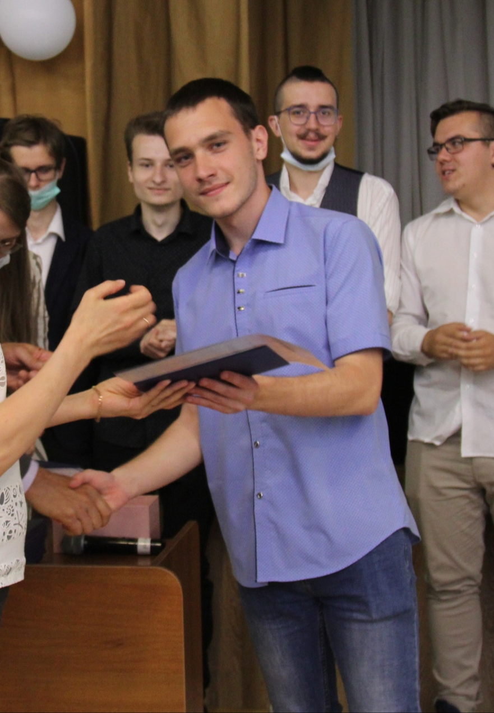
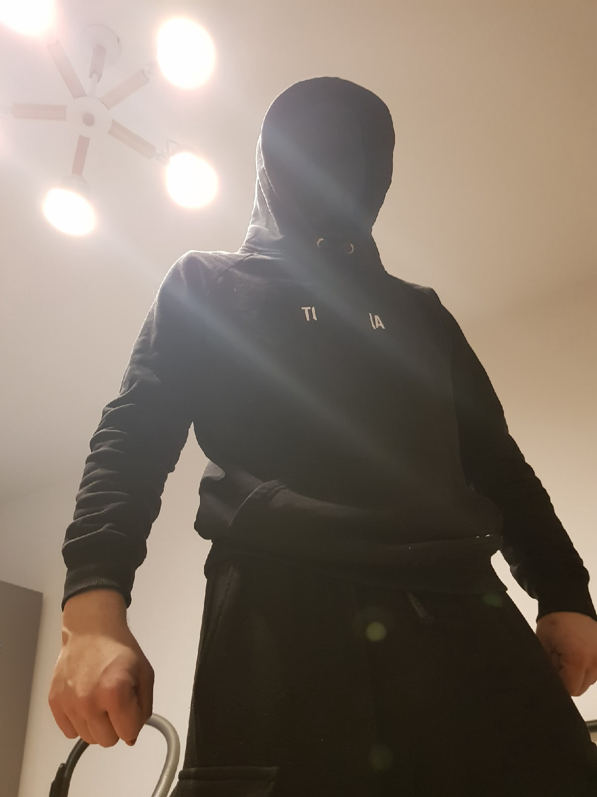
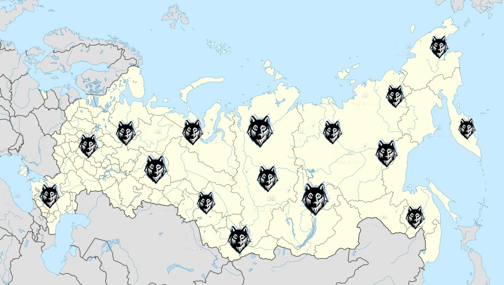
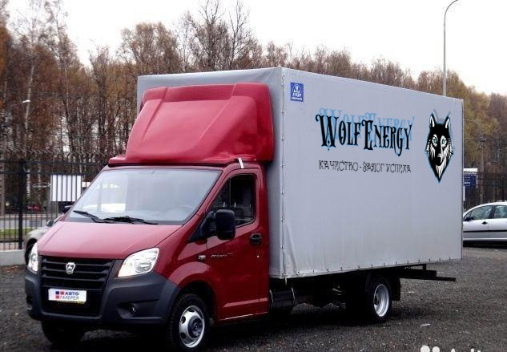
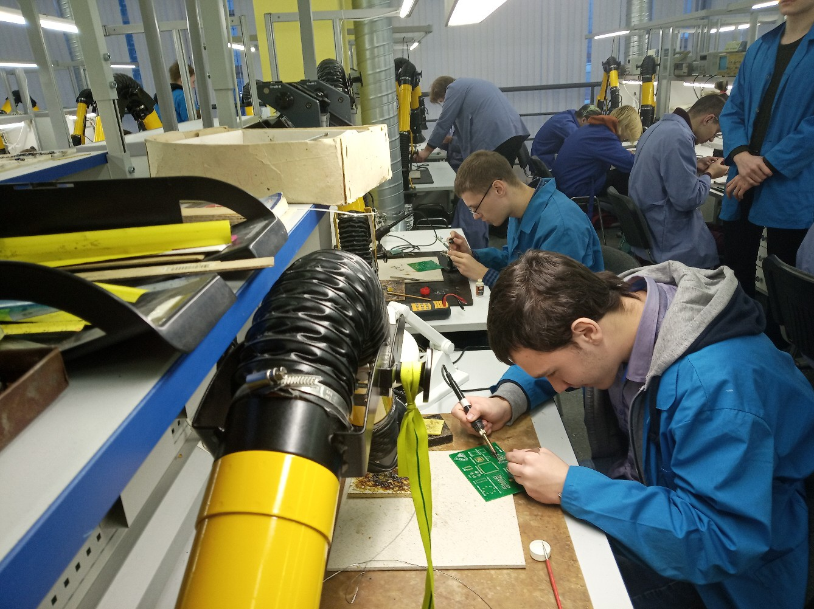
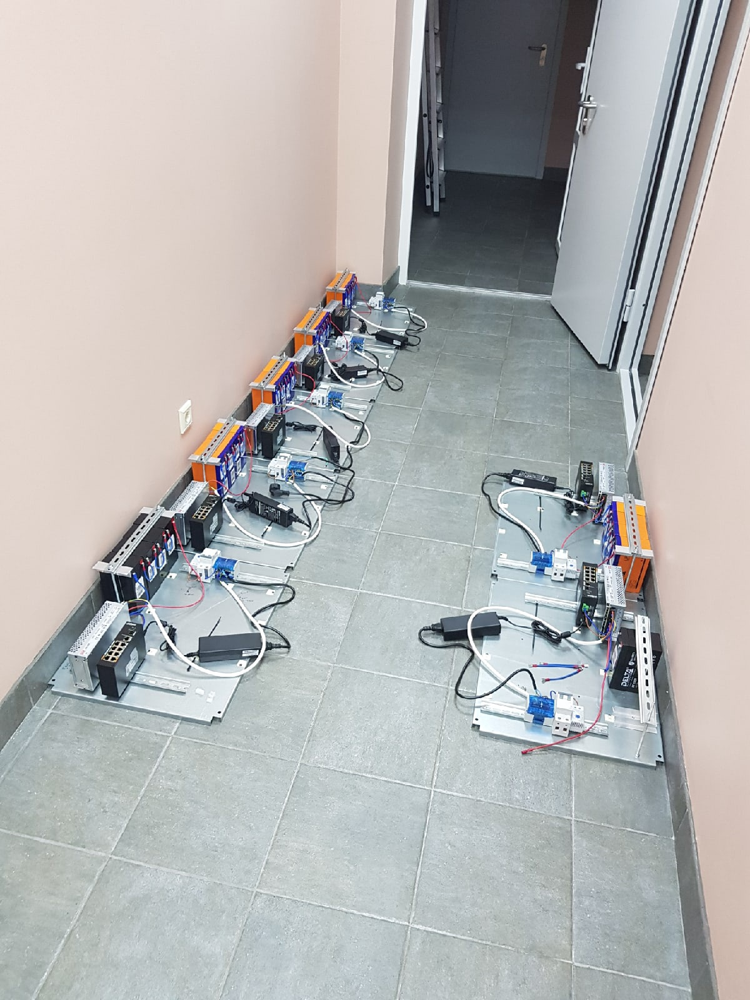
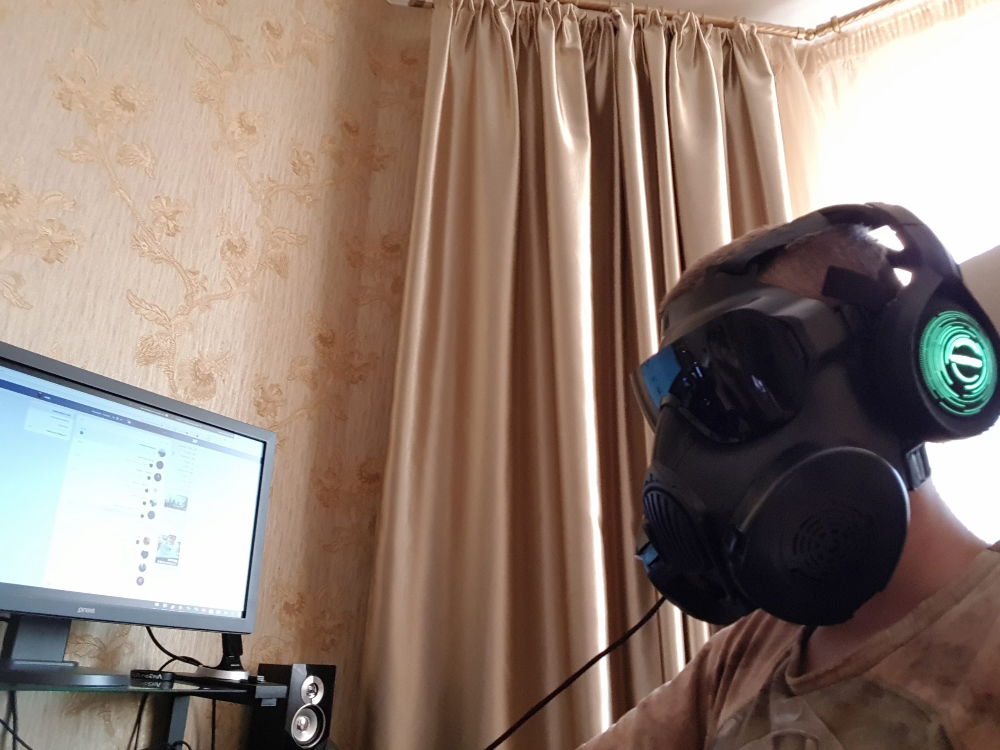
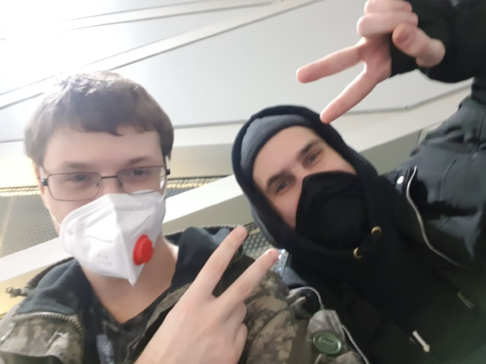
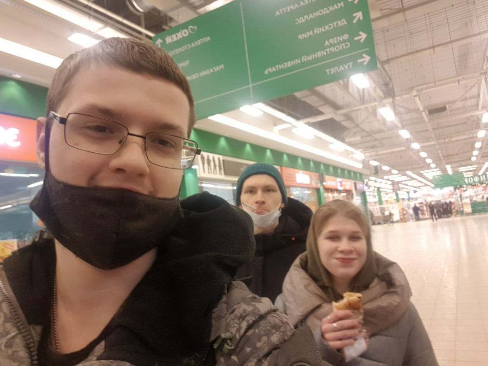
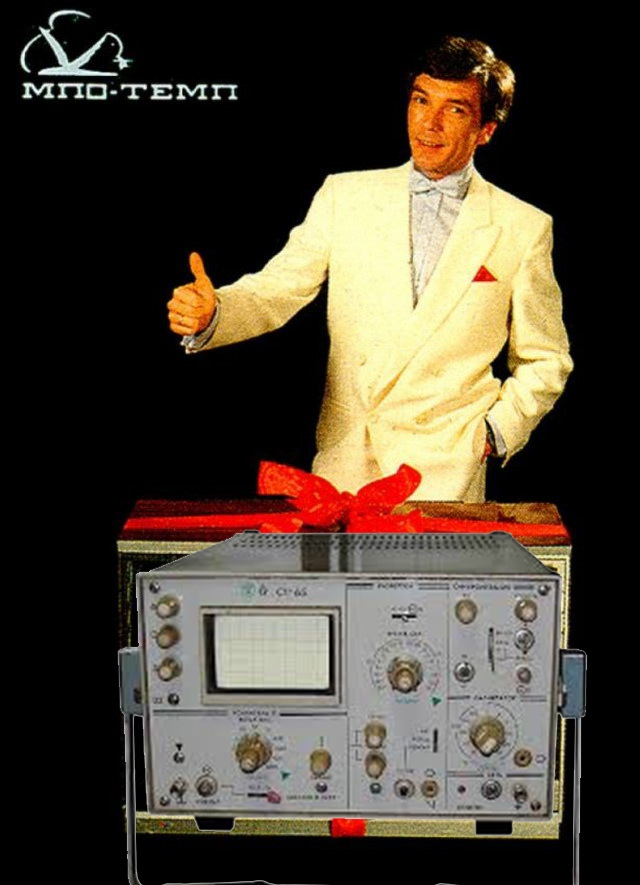

Успешная мировая кампания по производству и поставкеэлектронных приборов, в частности - осциллографов. Как и все рокеры - начинали с перепайки в гаражах и подвалах сломанных телеков.
Персонал
Коляда Е.В. (просто коляда,её больше никто и никуда не зовёт)
Андрей Волошин. Знаток, нформацию дрожит, когда Андрей приближается к ней.
Олег Хохлов. Младший знаток, тоже находит информацию в ящике Двуличанской
Евгения Карпеева. Бутылка пива и озорное лукавство заставит всё ей рассказать.
Даниил "Тетерь" Тетеря. Сигаретой остановил войну Демона и Мишы. 19/0 на Primal Beast и старческий Invoker
Глеб "Старковский" Катушкин/Кутушкин. Агент охраны, всё потому что "Я ПУДЖ ПУДЖ, всё потмоу что я ПУДЖ ПУДЖ"
Никита "Выдох Лайма" Пономарёв. Безмятежный поэт и хайку.
Крутое было время, когда приходилось на 4 самокатах ехать доставлять продукцию в Сингапур. Однако это дела минувшие
 Наши сотрудники не покладая рук трудяться день и ночь, чтобы впаять свою чертовщину.
Безопасность сотрудников - один из важнейших принципов нашей кампании. Поэтому и к системам безопасности уделён должный подход.
Внутри зданий и цехов установлёно лучешее оборудование систем безопасности, пресикающие любые попытки нарушение территории
Сервера, на которых стоят все эти афигенные системы.
Сотрудники отдела безопасности имеют большой опыт охраны засекреченных объектов и клубов на Думской. Но есть уникальные кадры, вернувшиеся живыми из Купчино. К таким кадрам относится "Захватчик душ и сердец" - Глеб "Старковский" Катушкин.
Сканер на предприятии
Мониторинг попыток проникновения
Специалисты ежегодно посещают разные уголки страны, презентуют (пропивают бюджет) новейшее оборудование.
 Качество, как у крышки от Звёздочки. Бери и не прогадаешь.
